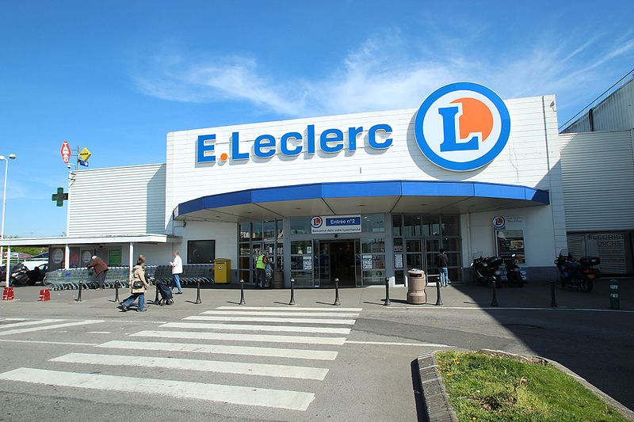

Leclerc, l'enseigne la moins chère
Leclerc est reconnu comme l’un des supermarchés les plus économiques de France. Il propose des prix très compétitifs sur les produits de consommation courante, notamment grâce à sa politique de prix bas et ses nombreuses promotions.